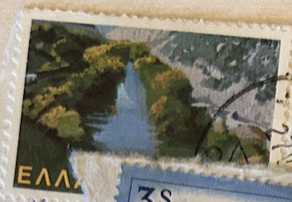
| SOURCE | TITLE| IMAGE MATCH | click to source page |
| eBay | s36616 YUGOSLAVIA EUROPA CEPT MNH** 2001 Booklet | eBay | 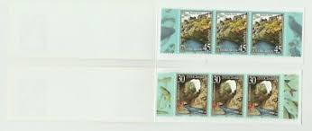 |
| eBay | 1979 1981 Greece Hellas 6 Stamps - Used | eBay | 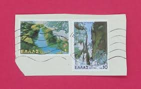 |
| Heinrich Köhler | Auktionshaus Heinrich Köhler | 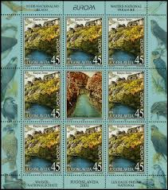 |
| eBay | S36616 YUGOSLAVIA EUROPA CEPT MNH 2001 Booklet | eBay | 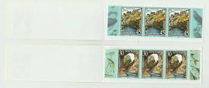 |
| wopa-plus.com | Swiss River Landscapes - 1.85 Reuss AG | Switzerland Stamps | Worldwide Stamps, Coins Banknotes and Accessories for Collectors | WOPA+ | 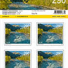 |
| Collector's Shop International | Yugoslavia Europa cept 2001 Complete set MNH (**) Mi:3031-3032 | 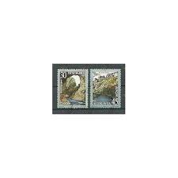 |
| eBay | Yugoslavia 2001 Yvert C 2878/79 Europe CEPT MNH VF | eBay | 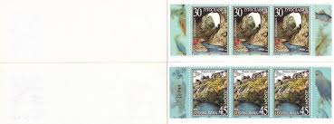 |
| wopa-plus.com | Swiss River Landscapes - 1.15 Versoix VD | Switzerland Stamps | Worldwide Stamps, Coins Banknotes and Accessories for Collectors | WOPA+ | 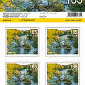 |
| eBay | Mint Never Hinged/MNH Birds European Stamps for sale | eBay | 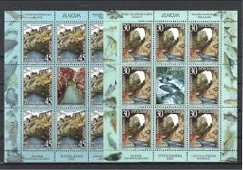 |
| eBay | Madeira 1983 VFM NH Single & Souvenir Sheet Of 3 Catalogs $12 | eBay | 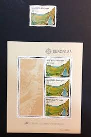 |
| eBay | ja1046) Japan 1999 Mie Kumano old trail MNH R0281-4 | eBay | 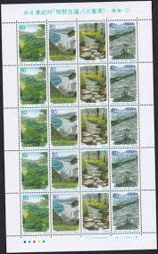 |
| AliExpress | 1994-13 , Mt Wuyi in Fujian . Post Stamps . 4 pieces , Philately , Postage , Collection - AliExpress | 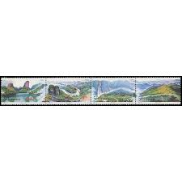 |
| eBay | Japan - Stamp Issue 1999 - Booklet Pane (2502a-2503a) | eBay | 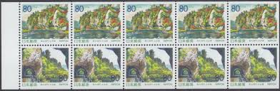 |
| eBay | Armenia MNH** 2018 International. Europa Europe Bridges in village Tsakkar SHEET | eBay | 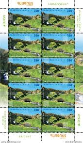 |
| eBay | INDIA - 2009 THE SILENT VALLEY 9V MNH TRAFFIC LIGHTS ERROR PERFORATION SHIFTED | eBay | 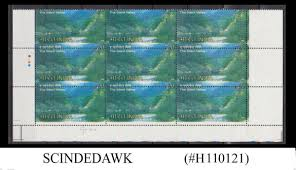 |
| TouchStamps | Issue: New Zealand : Fastway Post (Personalized and Private Mail Stamps, 2004) - TouchStamps | 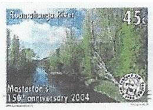 |
| eBay | china 1994-13 Wuyi mountain stamp | eBay | 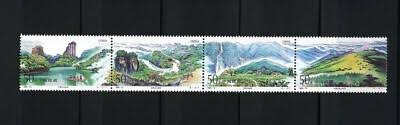 |
| eBay | 2012 EUROPE CEPT, Bosnia Serbia, 2 Minifheets of 8 series, Tourism, MNH** | eBay | 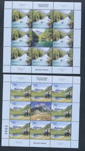 |
| eBay | URUGUAY 2002 SIERRA de los CARACOLES (Yvert 2009) self-adhesive MINT | eBay | 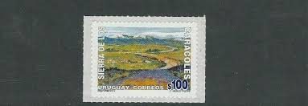 |
| eBay | CHINA PRC 1965 S73 Chingkang Mountains, cradle of revolution (Sc 834-41) XF/MNH | eBay | 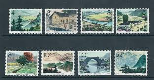 |
| DEVERELL / MACGREGOR : http://www.rhodesia.co.za | RHODESIA RU1797 | 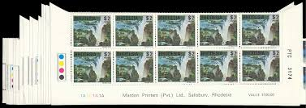 |
| eBay | EU - EUROPA C.E.P.T. - 1977 IRELAND 20 sets MNH | eBay | 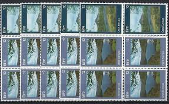 |
| eBay | Greece 1979, Landscapes, Definitive set MNH, Mi 1387-1401 cat 5,5€ | eBay | 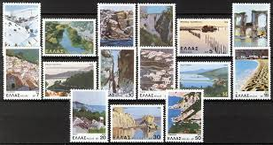 |
| Flickr | CC160-Landscape Paintings | Sofia X | Flickr | 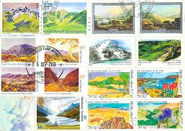 |
| eBay | New Caledonia Sc618 Landscape, Ship, Ouaieme Ferry, Deluxe Proof | eBay | 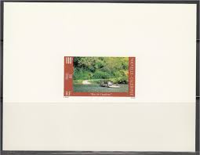 |
| eBay | MADEIRA Sc 88a(SG MS204)**VF NH 1983 EUROPA SOUVENIR SHEET $42 | eBay | 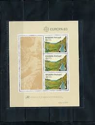 |
| eBay | Yellow Macau Stamps for sale | eBay | 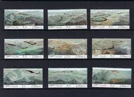 |
| seemystamps.com | See My Stamps! - A Place to Show Off Your Stamp Collection | Page 50 | 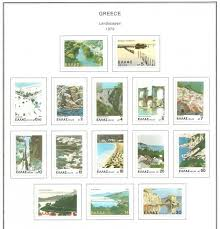 |
| Etsy | Vintage 1950's Style Bridal Veil Falls Utah UT Retro Travel Decal Sticker State Map - Etsy | 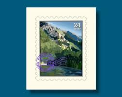 |
| eBay | EU - EUROPA C.E.P.T. - 1977 SPAIN 20 sets MNH | eBay | 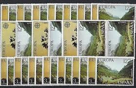 |
| eBay | New Zealand 730-3 FDC - Rivers | eBay | 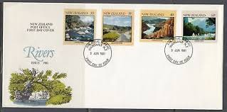 |
| eBay | China PRC stamps #834-41 Mint, Hinged complete set | eBay | 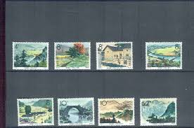 |
| Smits Philately | Index of /images/kavels/40000 kavels/40072 | 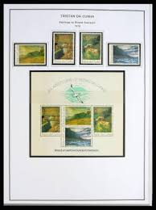 |
| Alamy | NEW ZEALAND - CIRCA 1980: A stamp printed in New Zealand shows Cleddau River, circa 1980 Stock Photo - Alamy | 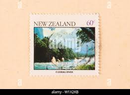 |
| eBay | Trees Postage Postal Stamps for sale | eBay | 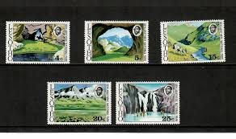 |
| eBay | Flags, National Emblems British Commemorative Stamps for sale | eBay | 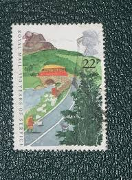 |
| NEOFILA | Armenia postage stamps | NEOFILA | 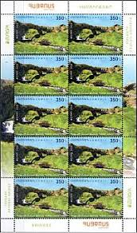 |
| HipStamp | Search "Japan 1999" / HipStamp | 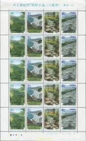 |
| eBay | Trees Bulgarian Stamps for sale | eBay | 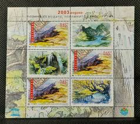 |
| eBay | 1979 Greek Landscapes MNH , Parnassus Milos Sifnos Paros Cephalonia Messolonghi | eBay | 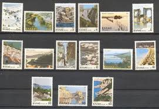 |
| PicClick | CHINA PR SELECTION Very Fine Mnh/Mlh/ Fu $9.17 - PicClick | 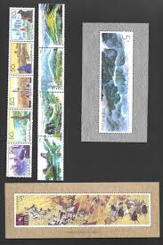 |
| eBay | NEW ZEALAND SC#2259 2009 $2.30 LAKE WANAKA VERY FINE USED RECENT STAMP | eBay | 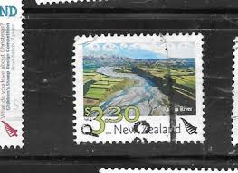 |
| BalkanAuction | Collectibles | BalkanAuction | 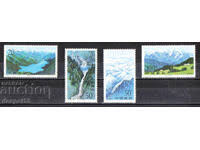 |
| Alamy | The Augustus bridge over the river Nera, near the city of Narni, Italy . 1790 304 J-J-X.Bidauld Augustus Bridge Stock Photo - Alamy | 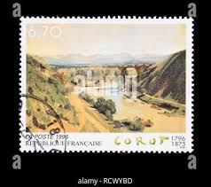 |
| myshopify.com | New Zealand 1981 Rivers Issue on First Day Cover – coversoftheworld | 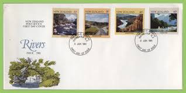 |
| Philatelie Liechtenstein | Liechtenstein from above - III - 2020 - 2000 - Philatelie Liechtenstein | 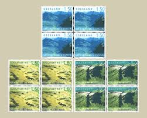 |
| JP BH Pošta | POSTSHOP - JP BH Pošta | 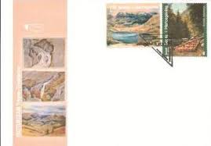 |
| Briefmarken.de | I ka MICHEL-Ka hui hoʻoponopono: Ka uku ʻana i nā niho ma USA - ʻohi a loiloi i nā peʻa | 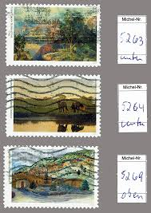 |
| eBay | Norway 2004 NK 1532-34 Europe XXVll MNH | eBay | 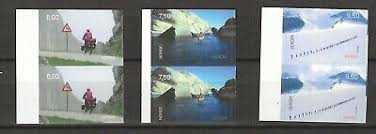 |
| eBay UK | New Zealand Stamp Booklets for sale | eBay UK | |
| eBay | P.R. China 1965 S73 Sc#834-841 Jinggangshan Mountain Full Set CTO No Hinge | eBay | |
| eBay | Nature Postage Stamps for sale | eBay | |
| eBay | S. Pierre and Miquelon Fauna. Fish 1993. Series + 4 test cards. | eBay | |
| POFIS | POFIS - Catalog - Products - Banskoštiavnické tajchy - Rozgrund (Lake Rozgrund) | |
| sergent.com.au | New Zealand Stamp Booklets 1998 - 2000 | |
| eBay | NEW ZEALAND 2014 Scenic Definitives, Limited Edition M/S MNH | eBay | |
| Stamp Digest | Stamps on National Trust For Scotland- British landscapes – Great Britain 1981. – Stamp Digest | |
| eBay | FRANCE REP. FRANCAISE OLD STAMPS 1965 Tourist Publicity - UNUSED | eBay | |
| eBay | Bundle MiNr. 1630 mint** & First Day Frankfurt stamped (X 817) | eBay | |
| eBay | Slovenia 1999 CEPT Europa MNH sheet | eBay |